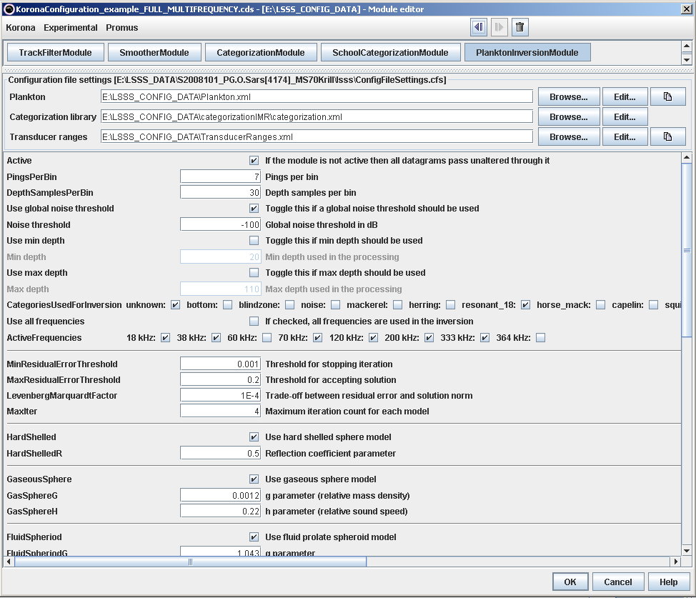

Acoustic scattering models are used to calculate the size of different zooplankton groups. This is done by means of data improvement (optional) followed by acoustic categorisation (Example 5) and inversion by means of the PlanktonInversionModule. The figure below shows which of the acoustic categories output from the CategorizationModule that is used in this example. The results of the inversion are the sizes of the zooplankton specimens, and these sizes for the active region may be visualized in the Plankton window.
